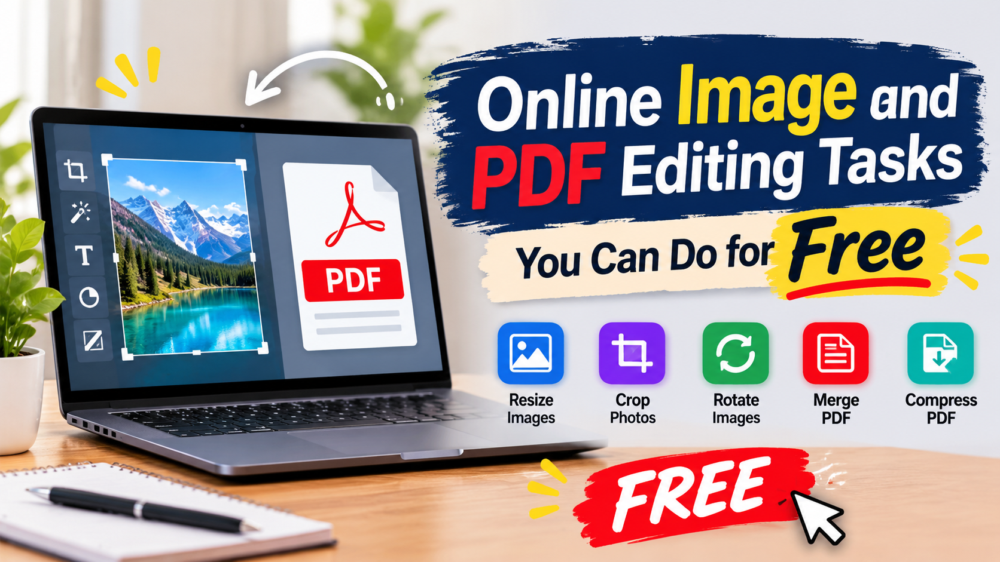
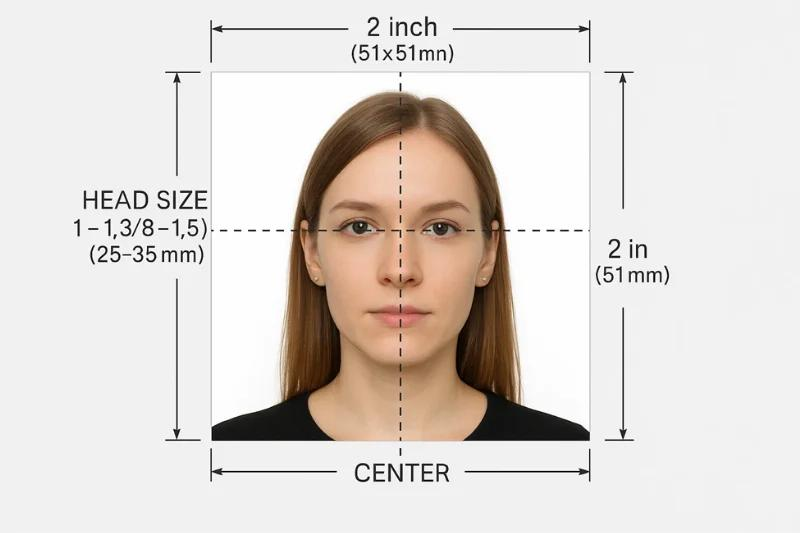

Whether you are preparing social media graphics, improving personal photos, creating promotional images, or correcting a PDF document, small editing tasks can take more time than expected.
An image may need a black-and-white effect. A social media post may have the wrong dimensions. You might want to add a headline, create a clean border, increase color intensity, or prepare a photograph for an application. Even a simple PDF can become difficult to use when its pages appear sideways.
The good news is that many everyday editing tasks do not require expensive desktop software. An online image editor or PDF tool can help you make specific changes directly in your browser.
This guide explains 10 practical editing tasks, how to approach each one, what to check before downloading, and which QuickToolsPK tools can help.
1. Convert an Image to Pure Black and White Online
A black-and-white picture can give a photograph a classic appearance, emphasize texture, and create a consistent visual style. It is also useful for posters, portfolios, presentations, and creative projects.
However, there is an important difference between a grayscale photograph and a strictly black-and-white image.
Grayscale vs. pure black and white: What is the difference?
People often use the phrases black and white and grayscale interchangeably, but they do not always describe the same result.
- Grayscale: Uses multiple shades between black and white. It preserves gradual changes in lighting, shadows, and detail.
- Strict two-tone black and white: Uses only black and white pixels, without intermediate gray shades.
For example, a grayscale portrait can preserve the subtle shadows on someone's face. A strict two-tone version may turn those areas into solid black or white shapes.
For most photographs, grayscale is the better option because it maintains more visual detail. Strict two-tone conversion is more suitable for silhouettes, certain illustrations, and graphic effects.
How to convert a picture to black and white online
You can use a black and white picture converter to create a monochrome version without manually editing every color.
A simple workflow is:
- Choose a clear JPG, PNG, or WEBP image.
- Open the QuickToolsPK Black and White Image Converter.
- Upload your photograph.
- Select an available conversion style.
- Preview the result and check the contrast.
- Download the converted image.
The QuickToolsPK tool currently offers Classic Grayscale, High Contrast, and Soft Monochrome styles. These options provide different grayscale appearances; they should not be confused with a guaranteed strict two-color threshold conversion.
When should you use a black-and-white picture converter?
Black-and-white conversion can be useful for:
- Portrait photography: Emphasize facial expressions, lighting, and shadows.
- Street photography: Draw attention to composition and everyday scenes.
- Product photography: Create a minimalist or editorial appearance.
- Architecture: Highlight lines, patterns, and building structures.
- Creative graphics: Make posters, collages, and presentation visuals more consistent.
One useful tip: do not automatically increase contrast to the maximum. Excessive contrast can remove detail from dark hair, clothing, and bright areas. Review the image at its intended display size before downloading.
Try the Black and White Converter
Convert an image to black and white online for free.
2. Resize Images for Social Media
An image that looks perfect on your computer may not fit properly on Instagram, Facebook, LinkedIn, TikTok, Pinterest, or another platform.
Different placements use different aspect ratios. A square post, a vertical Story, and a wide banner are not interchangeable. Uploading the same image everywhere without checking its dimensions can result in cropped text, missing product details, or poorly positioned subjects.
Why use a social media image resizer?
A social media image resizer helps prepare different versions of an original image for different placements.
Instead of rebuilding the same graphic from scratch, you can start with one high-quality image and adapt it to the required dimensions.
This is particularly useful for:
- Small businesses preparing promotional graphics.
- Social media managers handling multiple accounts.
- Designers creating campaign variations.
- Online stores preparing product images.
- Content creators publishing across several platforms.
The QuickToolsPK Social Media Image Resizer supports multiple platform selections, custom dimensions, and different fitting modes. Its listed presets include Instagram, Facebook, YouTube, TikTok, LinkedIn, X, and Pinterest.
Common social media image dimensions
The following are useful working dimensions for common placements. Platform specifications can change, so verify the current requirements before publishing.
| Platform and placement | Example dimensions | Aspect ratio |
|---|---|---|
| Instagram square post | 1080 × 1080 px | 1:1 |
| Instagram portrait post | 1080 × 1350 px | 4:5 |
| Instagram Story or Reel | 1080 × 1920 px | 9:16 |
| Facebook Page cover | 851 × 315 px | About 2.7:1 |
| LinkedIn landscape post | 1200 × 627 px | About 1.91:1 |
| LinkedIn profile banner | 1584 × 396 px | 4:1 |
| X profile header | 1500 × 500 px | 3:1 |
| YouTube thumbnail | 1280 × 720 px | 16:9 |
| Pinterest standard Pin | 1000 × 1500 px | 2:3 |
| TikTok vertical creative | 1080 × 1920 px | 9:16 |
These are practical reference sizes, not a guarantee that every placement will display the entire image identically on every device.
How to resize one image for multiple social platforms
- Start with the highest-quality original image available.
- Open the QuickToolsPK Social Media Image Resizer.
- Upload your image.
- Select the platforms and placements you need.
- Choose the appropriate resize mode.
- Preview each output separately.
- Download the versions and check them before publishing.
Try the Social Media Image Resizer
Prepare images for Instagram, Facebook, YouTube, TikTok, and more.
3. Add Text to an Image Online
Sometimes an image needs more than a visual. It needs a headline, product name, quotation, announcement, price, or short message.
Adding text directly to a picture is a simple way to turn an ordinary photograph into a more informative graphic.
What can you create with an online image text editor?
An add-text-to-image tool can help you create different types of visuals:
- Social media announcements.
- Promotional graphics and discount posts.
- Product images with names or prices.
- Quote graphics.
- Blog feature images.
- Event invitations.
- Educational visuals and simple instructions.
For example, a business could add a short promotional headline to a product photograph. A content creator could place a title over a landscape image to prepare a social media post.
How to add text to an image online
You do not need to rebuild an entire design to add a simple message.
- Open the QuickToolsPK Add Text to Image tool.
- Upload a JPG, PNG, or WEBP image.
- Enter your headline, caption, or message.
- Select an appropriate font size and text color.
- Choose the alignment and placement.
- Preview the design.
- Download the edited image.
The current tool provides text input, small, medium, and large size options, text color, alignment, and top, center, and bottom placement controls.
How to make text readable on a photograph
The biggest challenge when adding text to an image is readability. A beautiful font will not help if the words disappear into the background.
Use these practical design principles:
- Choose contrasting colors. White text often works well on dark backgrounds, while black text can be effective on light backgrounds.
- Keep the message short. A clear headline is usually easier to understand than several lines of small text.
- Create visual hierarchy. Make the main headline more prominent than supporting information.
- Protect the subject. Avoid covering faces, product details, or important parts of the photograph.
- Check the final dimensions. Text that looks readable on a large desktop preview may become too small on a mobile screen.
For professional-looking graphics, focus on one main message rather than filling every available space.
Try the Add Text to Image Tool
Add headlines, captions, or announcements to your photos.
4. Add a Border to a Photo Online for Free
A photograph does not always need a complicated design treatment. Sometimes, a simple border is enough to make it look more organized and polished.
A border can separate an image from its background, create a framed appearance, or help multiple pictures follow a consistent visual style.
How to add a border to a photo online
An online border tool can help you customize the outline around an image.
A basic workflow looks like this:
- Open the QuickToolsPK Image Borders and Padding tool.
- Upload your image.
- Choose the border thickness.
- Select a suitable border color.
- Adjust the padding if you also need extra space.
- Preview the result.
- Download the edited image.
The current QuickToolsPK page provides border thickness and color settings, along with padding size and background controls.
Image border vs. image padding
These two terms are related, but they serve different purposes.
| Feature | What it does | Best use |
|---|---|---|
| Border | Creates a visible outline around an image | Framed photos and defined edges |
| Padding | Adds extra space around image content | White space and balanced layouts |
| Both | Combines an outline with extra space | Product images and consistent graphics |
For example, if you want a photograph to have a thin black outline, use a border. If you want more white space around the photograph, use padding.
Which border color and thickness should you choose?
The best choice depends on the photograph and where you plan to use it.
- White border: A clean, minimal appearance.
- Black border: A stronger, more traditional frame.
- Gray border: A subtle separation without too much contrast.
- Brand color: Useful for maintaining a consistent business identity.
Start with a subtle border and moderate padding. A thick frame can distract from the actual image, especially when the photograph already has a strong composition.
Also remember that adding padding may increase the final canvas dimensions. If you need an exact output size, check the dimensions after editing.
Try the Image Border Tool
Add borders and padding to your photos online for free.
5. Create a Passport Size Photo Online
A photograph may look suitable for an application but still be rejected because its dimensions, framing, background, or file specifications do not meet the relevant requirements.
A passport size photo maker can help prepare an image for a particular application. However, selecting the correct dimensions is only one part of the process.
What is the correct passport photo size in the USA?
For a standard printed US passport photograph, the commonly required size is:

2 × 2 inches (51 × 51 mm) with the head height between 1 inch and 1 3/8 inches (25 mm) and the eye height between 1 1/8 inches and 1 3/8 inches (28 mm).
These measurements are for printed photographs. Digital applications may specify pixel dimensions, accepted file formats, and maximum file size. For example, the US Department of State currently requires a digital
Other countries and application types may use different measurements. A UK passport photo, for example, commonly uses 35 × 45 mm, while a Canadian passport photo uses 50 × 70 mm.
Digital application requirements can also differ from printed photo dimensions. An online application may specify pixel dimensions, accepted file formats, and maximum file size.
Never assume that one passport photo size works for every country or application.
How to make a passport size photo online
- Open the QuickToolsPK Passport Size Photo Maker.
- Select a clear, recent photograph.
- Choose the required size or enter custom dimensions if available.
- Review the face position and overall framing.
- Check the background and image quality.
- Download the prepared image if the available options support your requirements.
The QuickToolsPK tool lists common size examples, including the US 2 × 2 inch printed format, and provides custom width and height controls.
Try the Passport Size Photo Maker
Prepare your photo for passport applications with the correct dimensions.
6. Increase the Color Intensity of an Image
Sometimes a photograph looks dull even when its composition is good. The colors may appear faded, the lighting may be too dark, or the overall image may lack contrast.
Increasing color intensity can make an image look more vivid, but the key is to improve its appearance without making it unnatural.
What does color intensity mean in image editing?
Color intensity is commonly adjusted through saturation.
Saturation controls how vivid or muted the colors appear. Increasing saturation makes colors stronger, while reducing it creates a softer or more muted look.
However, saturation is not the same as brightness or contrast.
| Setting | What it changes |
|---|---|
| Brightness | Overall lightness or darkness |
| Contrast | Difference between light and dark areas |
| Saturation | Intensity of colors |
| Warmth | Overall warm or cool color appearance |
Understanding these settings helps you choose the right adjustment instead of applying random edits.
How to increase color intensity online
- Open the QuickToolsPK Adjust Image Colors tool.
- Upload your JPG, PNG, or WEBP image.
- Adjust saturation to make colors more vivid.
- Change brightness if the image is too dark or too bright.
- Fine-tune contrast to improve separation between light and dark areas.
- Adjust warmth if the image looks too cool or too warm.
- Compare the edited version with the original.
- Download the final image.
The tool currently provides brightness, contrast, saturation, and warmth controls.
How to make colors look more natural
Increasing saturation too much can create problems.
Skin tones may become unnaturally orange or red. Green backgrounds can become overly bright, and product colors may no longer represent the real item.
For better results:
- Make small adjustments instead of moving every setting to the maximum.
- Check skin tones carefully when editing portraits.
- Preserve accurate product colors for online stores.
- Avoid losing details in bright highlights and dark shadows.
- Compare the edited image with the original before downloading.
For ecommerce photography, accuracy is particularly important. An edited product image should still represent the actual product.
Try the Adjust Image Colors Tool
Increase saturation, adjust brightness, and fine-tune contrast.
7. Rotate a PDF Online With a PDF Rotator
PDF documents are easy to share, but scanned pages and converted documents do not always have the correct orientation.
A page may appear sideways, upside down, or rotated differently from the other pages. This can make a document uncomfortable to read, especially when it contains several pages.
A PDF rotator can correct page orientation without requiring you to recreate the document.
How to rotate a PDF online
- Open the QuickToolsPK PDF Rotator.
- Select or drag and drop your PDF file.
- Choose 90°, 180°, or 270°.
- Apply the rotation.
- Review the result.
- Download the rotated PDF.
The current QuickToolsPK PDF Rotator supports PDF files up to 100 MB and provides the three rotation options. Its current operation applies the selected rotation to all pages in the document.
What if only one page needs to be rotated?
Sometimes, most pages are already correct, but one scanned page is sideways.
In that situation, rotating the entire document may create more problems. You should first separate the page that needs correction.
A practical workflow is:
- Split the PDF into smaller documents or individual pages.
- Rotate the affected page or separate document.
- Review its orientation.
- Recombine the pages if needed.
You can explore the QuickToolsPK PDF tools to find the relevant PDF operations.
Does rotating a PDF reduce its quality?
Rotating a PDF page is different from taking a screenshot and creating a new image of the document.
The QuickToolsPK PDF Rotator applies rotation at the document structure level. Its page states that text and images remain unchanged during rotation.
After downloading, open the file in a PDF reader and check that the text, images, and page order are correct.
Try the PDF Rotator
Fix sideways pages and correct PDF orientation online.
8. Resize an Image for Twitter (X)
A graphic designed for a square Instagram post may not fit properly in an X post or profile header.
The reason is simple: different placements use different dimensions and aspect ratios. If you upload an image without checking its framing, important text or parts of the subject may be cropped.
What image size should you use for X?
Here are useful dimensions available in the QuickToolsPK X Image Resizer:
| X placement | Example dimensions | Aspect ratio |
|---|---|---|
| Profile header / banner | 1500 × 500 px | 3:1 |
| Landscape post | 1600 × 900 px | 16:9 |
| Square post | 1080 × 1080 px | 1:1 |
| Portrait post | 1080 × 1350 px | 4:5 |
These are working dimensions offered or referenced by the tool. X can display and crop images differently depending on the placement and interface, so preview the final post before publishing.
How to resize an image for Twitter online
- Visit the QuickToolsPK X (Twitter) Image Resizer.
- Upload your image.
- Select Header, Landscape Post, Square Post, or Portrait Post.
- Choose Crop to Fill or Fit Image.
- Review the framing.
- Download the resized image.
- Check the result in the X post composer before publishing.
Crop to fill or fit image: Which option is better?
- Crop to Fill: The image covers the entire target canvas, but some content around the edges may disappear.
- Fit Image: The complete original image remains visible within the selected dimensions. Depending on the proportions, empty space may appear around it.
For a photograph where the entire subject matters, fitting is often a safer starting point. For a background image that needs to cover the full canvas, cropping may be more suitable.
For X headers, keep important text, faces, and logos away from the edges. The profile picture can overlap part of the header, and different screens may display the banner differently.
Try the X (Twitter) Image Resizer
Prepare your images for X headers, posts, and profile banners.
9. Choose the Right Tool for Your Image Editing Task
Not every image editing task needs the same solution. Using the wrong tool can create unnecessary work or change the image in ways you did not intend.
Here is a quick reference to help you choose.
| Your goal | Suitable tool |
|---|---|
| Remove color from a photograph | Black and White Converter |
| Prepare images for multiple platforms | Social Media Image Resizer |
| Place a headline or caption on a picture | Add Text to Image |
| Create an outline around a photo | Borders and Padding |
| Prepare a photo for an application | Passport Size Photo Maker |
| Make colors more vivid | Adjust Image Colors |
| Prepare an X header or post | X Image Resizer |
| Correct sideways PDF pages | PDF Rotator |
A good workflow starts with the original file, uses the specific tool needed for the task, and checks the exported result.
10. Tips for Better Image and PDF Editing Results
Even when an online editor is simple to use, the quality of the final result depends on your source file and editing decisions.
Start with the original file
Whenever possible, use the highest-quality original photograph or document. Repeatedly editing and exporting the same compressed image can reduce quality over time.
Keep an untouched copy so you can return to the original if necessary.
Understand dimensions and aspect ratios
Pixel dimensions describe an image's width and height. Aspect ratio describes the relationship between those dimensions.
For example, a 1080 × 1080 image is square, while a 1080 × 1920 image is vertical.
Choosing the correct ratio before editing can help avoid unnecessary cropping.
Preview before downloading
Always review the finished result. Check that:
- Faces and important subjects remain visible.
- Text is readable.
- Logos are not cut off.
- Colors look natural.
- Borders and padding are balanced.
- The document pages have the correct orientation.
- The downloaded file opens correctly.
Choose the right output format
Different formats are useful for different types of content.
- JPG: Often suitable for photographs and general-purpose images.
- PNG: Useful for graphics, sharp edges, and images that need transparency.
- WEBP: Commonly used for web images where file size and quality matter.
The correct choice depends on the editor's supported export formats and the platform where the image will be used.
Check privacy before using online tools
If you are editing personal photographs, identification images, or confidential documents, understand how the tool processes your files.
QuickToolsPK states that its tools process files locally in the browser rather than uploading them to its servers. Its PDF Rotator also describes local processing on its tool page.
For sensitive documents, you should still review the site's privacy information and verify the behavior of the particular tool you use.
Frequently Asked Questions
1. How can I convert an image to black and white online?
2. What is the difference between a black-and-white picture and a grayscale image?
3. How can I resize an image for multiple social media platforms?
4. How do I add text to an image online?
5. How can I add a white border to a photo?
6. Can I create a US passport photo online?
7. How do I increase the color intensity of an image?
8. Can I rotate a PDF without converting it into images?
9. How do I resize an image for an X header?
10. Does resizing an image improve its quality?
11. Should I crop or fit an image when resizing?
12. Are online image and PDF editing tools suitable for beginners?
Edit Images and PDFs With QuickToolsPK
You do not need a complicated editing workflow for every small task. Whether you want to convert a photograph to black and white, resize a graphic for social media, add a border, prepare an application photo, or rotate a PDF, choosing the right tool can make the process easier.
QuickToolsPK brings together image and PDF utilities in one place, with browser-based workflows for common editing tasks.
Explore the tools below and choose the one that matches your project: